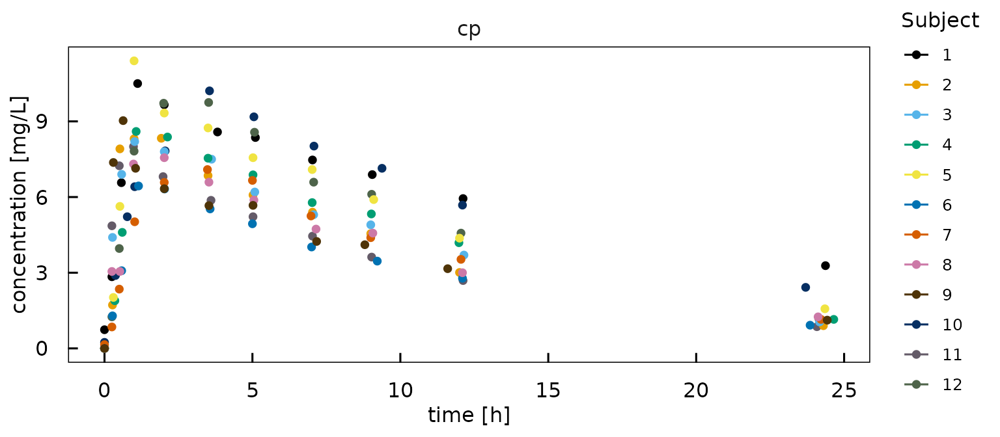
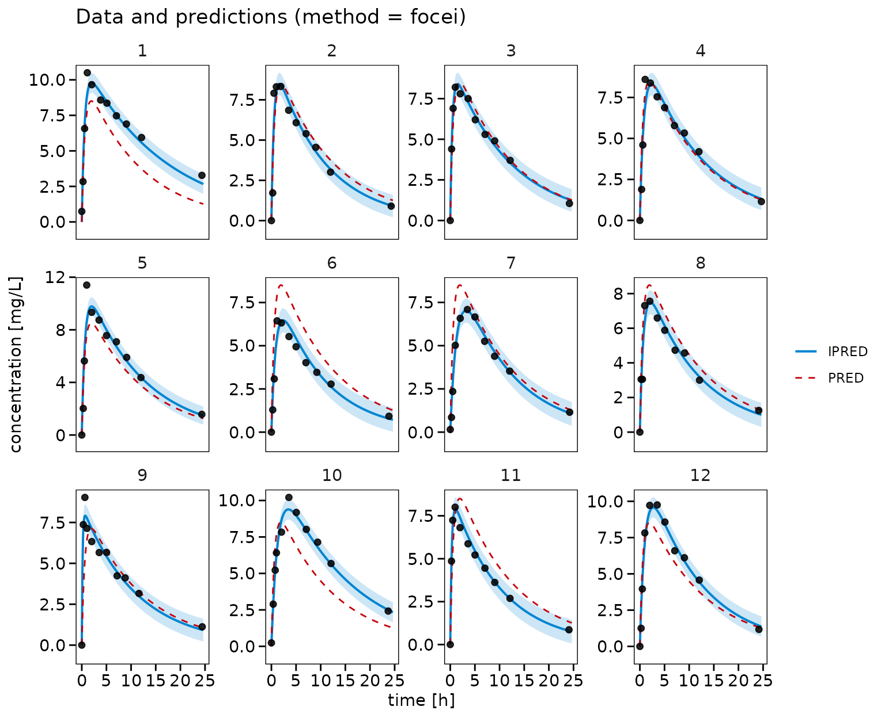
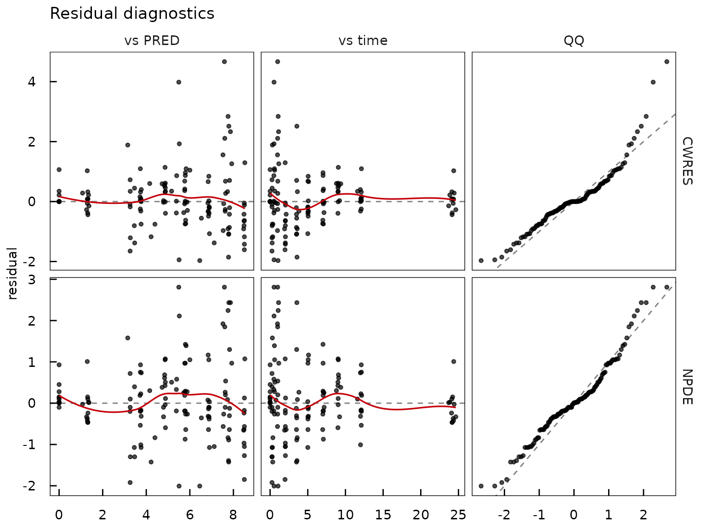
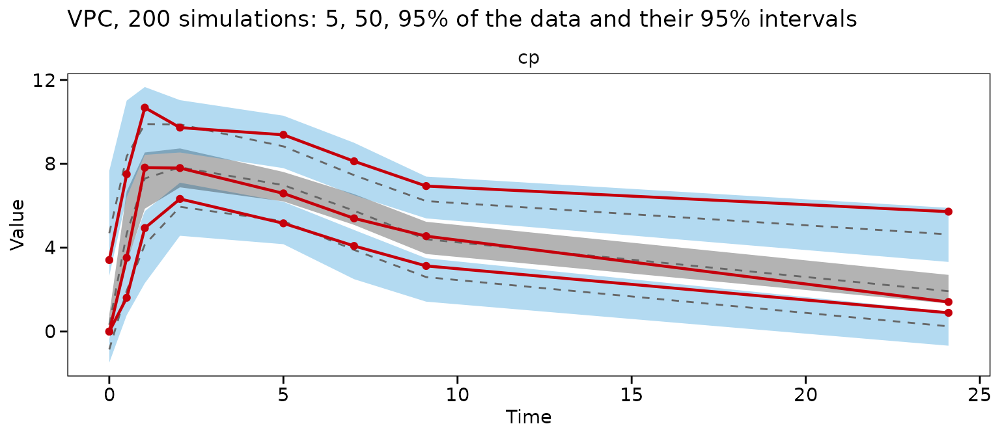
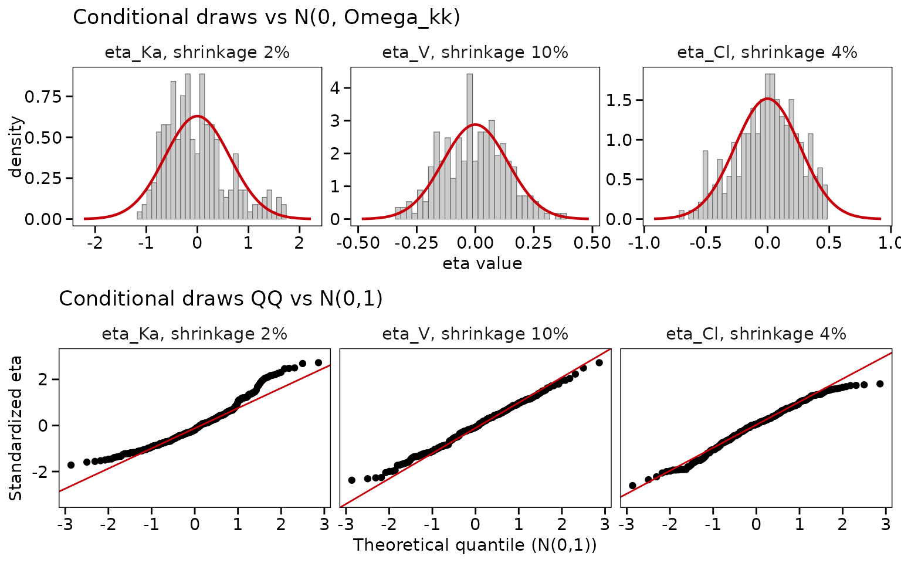
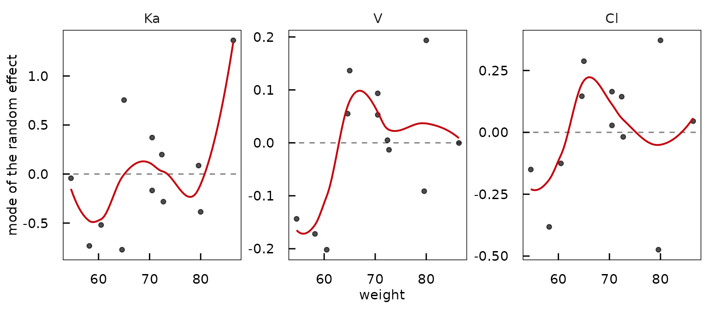
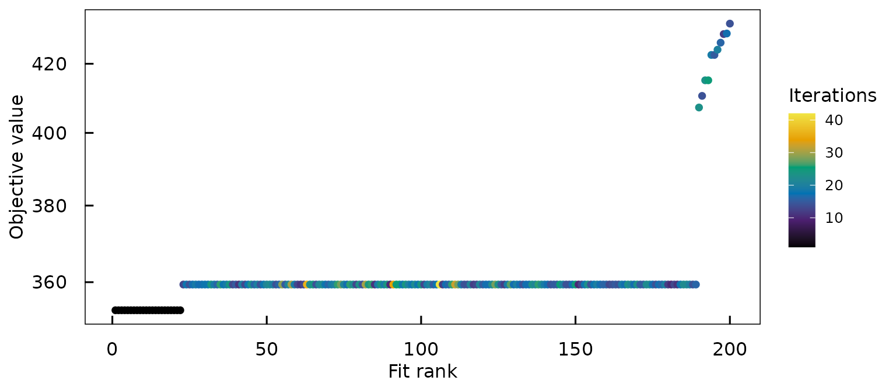
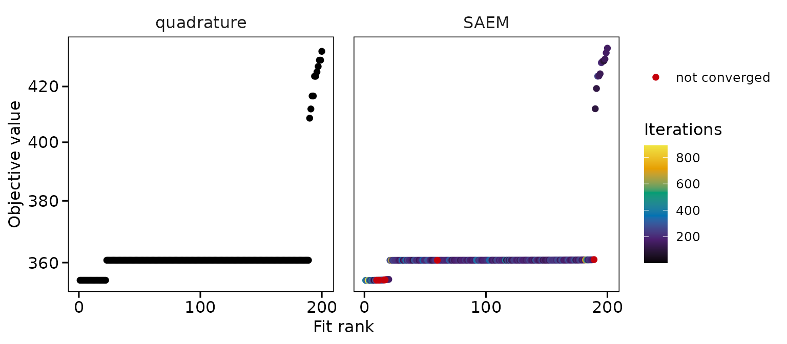

A mixed-effects model writes each individual parameter (subject,
cell, cell line) as a population value plus a random deviation,
estimates population values and spread, and integrates the deviations
out of the likelihood. In dMod2 random effects are declared in the
parfn; em() fits by one of four approximations
of the integral, all instances of the EM algorithm. Example:
theophylline, twelve subjects, one oral dose each, plasma concentrations
over a day.
library(dMod2)
options(dMod2.outdir = file.path(tempdir(), "guide-mixed-effects"))
dir.create(getOption("dMod2.outdir"), showWarnings = FALSE)Pharmacokinetic model
The dose enters a depot, is absorbed into the central compartment of volume \(V\) and cleared by the flux \(\mathrm{Cl}\, C_c\) in the unit frame: clearance \(\mathrm{Cl}\) is a volume per time, the concentration falls at rate \(\mathrm{Cl}/V\).
reactions <- eqnlist() |>
assignCompartment(Ag = "depot") |>
assignCompartment(Cc = "central", volume = "V") |>
setCompartmentVolume(unit = "1") |>
addReaction("Ag", "Cc", "Ka * Ag", "absorption") |>
addReaction("Cc", "", "Cl * Cc", "elimination", rateCompartment = "unit")
as.eqnvec(reactions)
#> Idx Inner <- Outer
#> 1 Ag <- -1*(Ka*Ag)
#> 2 Cc <- 1*(Ka*Ag)*(1/V)-1*(Cl*Cc)*(1/V)em() needs second derivatives: build with
deriv2 = TRUE and the forward-over-reverse derivative
modes.
dm <- c("forward", "reverse", "forward-reverse")
x <- Xs(odemodel(reactions, modelname = "theo", compile = FALSE, deriv2 = TRUE, derivMode = dm))
g <- Y(c(cp = "Cc"), x, modelname = "theo_g", compile = FALSE, deriv2 = TRUE, derivMode = dm)
e <- Y(c(cp = "sigma"), g, attachInput = FALSE, modelname = "theo_e", compile = FALSE, deriv2 = TRUE,
derivMode = dm)Theophylline data
Each subject is a condition; the condition table holds dose in mg and body weight.
data(Theoph, package = "datasets")
Theoph$Subject <- as.character(Theoph$Subject)
data <- as.datalist(data.frame(name = "cp", time = Theoph$Time, value = Theoph$conc, sigma = NA_real_,
condition = Theoph$Subject))
subjects <- sort(unique(Theoph$Subject))
table <- data.frame(ID = subjects, dose = tapply(Theoph$Dose * Theoph$Wt, Theoph$Subject, `[`, 1)[subjects],
weight = tapply(Theoph$Wt, Theoph$Subject, `[`, 1)[subjects], row.names = subjects)
head(table)
#> ID dose weight
#> 1 1 319.992 79.6
#> 10 10 320.100 58.2
#> 11 11 319.800 65.0
#> 12 12 320.650 60.5
#> 2 2 318.560 72.4
#> 3 3 319.365 70.5
plotData(data) +
ggplot2::labs(x = "time [h]", y = "concentration [mg/L]", color = "Subject")
Random-effect formulas
define("x <- x", x = ...) starts the transformation
as in Setting up models,
branch() copies it per table row, and insert()
sets the dose into the depot, an empty central compartment and log-scale
parameters. An effect formula turns a symbol into a linear predictor
with fixed and random effects in lme4 notation:
trafo <- eqnvec() |>
define("x <- x", x = c("Ka", "V", "Cl", "Ag", "Cc", "sigma")) |>
branch(table = table) |>
insert("Ag <- dose", dose = dose) |>
insert("Cc <- 0") |>
insert("x <- exp(x)", x = c("Ka", "V", "Cl", "sigma")) |>
insert(Ka + V + Cl ~ 1 + (1 | ID))
p <- P(trafo, method = "explicit", modelname = "theo_p", compile = FALSE, deriv2 = TRUE, derivMode = dm)
compile(x, g, e, p, output = "theo", cores = 6)
random <- randomEffects(p)
random
#> Random effects: 3 terms over ID
#> block 1 (normal, ID): eta_Ka
#> block 2 (normal, ID): eta_V
#> block 3 (normal, ID): eta_Cl
#> fixed effects: Ka, V, ClThe formula acts after the log transformation, so \(\log \mathrm{Cl}_i = \mathrm{Cl} + \eta_{\mathrm{Cl},i}\), \(\eta_{\mathrm{Cl},i} \sim \mathcal{N}(0, \omega_{\mathrm{Cl}}^2)\): log-normal individual parameters. Further forms:
-
Cl ~ 1 + (1 | ID): random intercept per subject. -
Cl ~ 1 + logWeight + (1 | ID): a covariate, fixed effectCl_logWeighton a table column. -
Ka + Cl ~ 1 + (1 | p | ID): random effects ofKaandClcorrelated (same IDp). -
Cl ~ 1 + wt + (1 + dose | p | ID): a covariate and a random slope, correlated with the intercept. -
Cl ~ 1 + (1 | ID) + (1 | ID:OCC): variability between subjects and between occasions. -
Cl ~ 1 + (1 | gr(ID, dist = spikeSlab())): spike-and-slab instead of normal random effects.
A group (a level of the grouping, such as a subject) may own several
conditions, which share the group random effects; a condition outside
every group has none. The random effects of one ID, or of one term
without ID, form a block with full covariance, so \(\Omega\) is block diagonal;
omega_<a>_<b> are the entries of the Cholesky
factor of each block, with the log of the factor diagonal on the
diagonal, for a random effect alone in a block the log of the standard
deviation of that effect. This chapter treats normal random effects;
spike-and-slab and Dirichlet-process ones are in Sparse deviations.
Marginal likelihood
em() maximizes the likelihood of fixed effects, \(\Omega\) and error parameters with the
random effects of every group integrated out. It takes the data
objective normL2(data, g * x * p, errmodel = e) and builds
the random-effect prior from randomEffects(p);
normT(..., df = 4) instead of normL2() gives
Student-t residuals. method picks the approximation:
| method | use | reported \(-2 \log L\) |
|---|---|---|
"focei" |
default, fast, Laplace’s approximation at the modes | Laplace |
"quadrature" |
skewed posteriors, few random effects per group | quadrature |
"laplaceEM" |
EM on the Laplace approximation | quadrature of level \(K + 2\) |
"saem" |
many random effects per group, non-Gaussian posteriors | quadrature of level \(K + 2\) |
\(K\) is the number of random effects of a group. Derivations: Methods > Marginal likelihood and Methods > EM algorithm.
First-order conditional estimation (FOCEI)
First-order conditional estimation with interaction replaces each integral by Laplace’s approximation at the mode of the group; \(-2 \log L\) may lie above or below the exact one. Inner and outer trust regions and gradient: Methods > FOCEI.
FOCEI fit
init holds the parameters that are neither random
effects nor created by effect formulas (those start at 0); random-effect
standard deviations start at control$sd.
init <- c(Ka = 0, V = 3, Cl = 0.7, sigma = log(0.5))
fit <- em(obj = normL2(data, g * x * p, errmodel = e), random = random, init = init, verbose = FALSE)
summary(fit)#> EM summary (focei): -2 log L 359.403232, converged TRUE, 10 iterations
#> without the 2 pi constant of the data (NONMEM OBJ): 116.803459
#>
#> Parameters:
#> estimate se rsePct
#> Ka 0.4639 0.19150 41.290
#> V 3.4600 0.04700 1.358
#> Cl 1.0120 0.08320 8.220
#> sigma -0.3647 0.07124 19.540
#> omega_Ka_Ka -0.4552 0.23380 51.360
#> omega_V_V -1.9770 0.28860 14.600
#> omega_Cl_Cl -1.3360 0.24810 18.570
#>
#> Random effects:
#> type eta1 eta2 estimate se
#> sd Ka Ka 0.6343 0.14830
#> sd V V 0.1384 0.03995
#> sd Cl Cl 0.2629 0.06521
#>
#> Shrinkage: eta_Ka = 0.018, eta_V = 0.103, eta_Cl = 0.039Every block here holds one random effect, so omega_* are
log standard deviations, shown on natural scale in the random-effects
table. Shrinkage near 0 means the modes spread as widely as the random
effects, near 1 that the data of a subject hardly move the individual
parameter.
value is \(-2 \log L\)
with all data constants; valueNonmem, \(-2 \log L\) less \(\log(2\pi)\) per reading above the limit of
quantification, compares with the NONMEM OBJ
(NA for normT()). The fit holds
argument, Omega, omega (standard
deviations and correlations with standard errors), random
(modes per group with conditional standard errors),
etaModes, etaSE and shrinkage.
Methods: coef(), vcov(),
confint() (Wald or method = "profile"),
logLik(), AIC(), BIC(),
anova() of nested fits, predict() (individual
and population), residuals(), simulate() and
the plots below.
FOCEI settings
entry of control
|
default | controls |
|---|---|---|
sd |
0.3 |
start of standard deviations not in init
|
innerControl |
rinit = 1, rmax = 10,
iterlim = 30, steptol = 1e-8,
mtol = 1e-12
|
trust region of the modes |
trustControl |
rinit = 1, rmax = 10,
iterlim = 200, ftol = 1e-7,
mtol = 1e-5
|
trust region of population parameters |
derivMode |
"forward-reverse" |
volume-term second derivatives, or
"forward-forward"
|
secondOrderCorrection |
TRUE |
derivative of the volume term |
"forward-forward" needs deriv2 = TRUE;
summary() says whether the Hessian is exact;
secondOrderCorrection = FALSE biases the estimates (Methods > Volume term).
fixed holds parameters at given values.
sparse = TRUE uses sparse Hessians for many fixed effects,
"auto" decides as trust(). The outer
mtol is a predicted change of \(10^{-5}\) in \(-2
\log L\), the inner tolerances are tighter; the solver error must
stay below them. em(cores = ) spreads groups and conditions
over threads, Remote
computing.
Adaptive sparse-grid quadrature
Laplace’s approximation biases \(\Omega\) most for skewed posteriors,
e.g. oral doses sampled near absorption.
method = "quadrature" starts from the converged FOCEI fit
and integrates on a sparse grid around each group mode at the level
tol requires; level \(K\)
is Laplace’s approximation. A certificate flags groups whose posterior
the grid does not resolve. Grid, stages and certificate: Methods >
Adaptive sparse-grid quadrature.
entry of control$quadrature
|
default | controls |
|---|---|---|
tol |
0.1 |
allowed change of \(-2 \log L\) by
the next level, split over groups; Inf keeps stage
levels |
levels |
K + 1 |
stages; level K + s is exact for total degree
2 s + 1
|
maxLevel |
K + 8 |
highest level |
tolDecrement |
1e-4 |
Newton decrement that ends a stage |
maxEcmPerStage |
10 |
rebuilds per stage |
cm1Control, maxCm1Iter
|
rinit = 1, ftol = mtol = 1e-8;
30
|
trust() settings and iterations of a step |
pruneTol |
Inf |
drop nodes with log weight this far below the largest |
certificate |
points = 256, seed = 1
|
importance-sampling check, FALSE skips |
A quadrature fit holds stageTrace (per rebuild: stage
level, value, Newton decrement, resolution, highest level, node count),
etaCov (posterior covariance \(\hat M_i - \hat m_i \hat m_i^\top\) per
group) and certificate. plotTrace(fit) draws
the trace, plotRandomEffects(fit) histograms and QQ plots
of conditional draws, or with type = "modes" of the modes,
against the fitted \(\mathcal{N}(0,
\Omega_{kk})\) (see Model
diagnostics).
Laplace EM
method = "laplaceEM" runs expectation conditional
maximization on the Laplace approximation and reports the quadrature of
level \(K + 2\). Settings in
control$quadrature: convergence tolerance
epsEcm (default 1e-5), iterations
maxEcm (default 200), and of the quadrature above
cm1Control, maxCm1Iter, pruneTol
and maxLevel; the levels are \(K
+ 1\) and \(K + 2\), and the fit
has no certificate. Details: Methods > Laplace EM.
Stochastic approximation EM (SAEM)
method = "saem" draws the random effects from the
posterior and averages over iterations, after a burn-in with falling
step sizes; suited to many random effects and skewed, heavy-tailed or
multimodal posteriors. set.seed() reproduces a fit.
em() reports the quadrature of level \(K + 2\) at the estimate, with standard
errors from the Hessian of that quadrature. Details: Methods > SAEM.
entry of control$saem
|
default | controls |
|---|---|---|
nBurnin, nEM
|
200, 300
|
most burn-in and averaging iterations |
nMcmc, nLaplace
|
3, 3
|
random-walk and independence steps per iteration |
laplaceEvery |
5 |
iterations between mode refreshes |
laplaceScale |
1.5 |
covariance factor of the independence proposal |
window |
25 |
iterations of drift test and averaging start |
mcTol |
0.05 |
Monte Carlo increase of \(-2 \log L\) that ends averaging |
Comparison of methods
The four methods from the same start:
obj <- normL2(data, g * x * p, errmodel = e)
set.seed(1)
fits <- list(focei = fit,
quadrature = em(obj, random, init, method = "quadrature", verbose = FALSE),
saem = em(obj, random, init, method = "saem", verbose = FALSE))
round(sapply(fits, function(f) c(f$argument[names(fit$argument)], minus2logL = f$value)), 3)#> focei quadrature saem
#> Ka 0.464 0.464 0.456
#> V 3.460 3.460 3.452
#> Cl 1.012 1.012 1.014
#> sigma -0.365 -0.365 -0.369
#> omega_Ka_Ka -0.455 -0.455 -0.458
#> omega_V_V -1.977 -1.977 -2.003
#> omega_Cl_Cl -1.336 -1.336 -1.305
#> minus2logL 359.403 360.754 360.750
laplaceEM <- em(obj, random, init, method = "laplaceEM", verbose = FALSE)
round(c(laplaceEM$argument[names(fit$argument)], minus2logL = laplaceEM$value), 3)#> Ka V Cl sigma omega_Ka_Ka omega_V_V
#> 0.459 3.453 1.008 -0.357 -0.475 -2.000
#> omega_Cl_Cl minus2logL
#> -1.330 360.745Estimates agree within their standard errors. Each \(-2 \log L\) approximates the same integral; Laplace EM and SAEM report the quadrature. FOCEI may lie below it: Laplace’s method is no bound, and a lower value is approximation error, not a better fit. Stage trace and certificate of the quadrature fit:
fits$quadrature$stageTrace[, c("level", "ecmIter", "OFV", "decrement", "resolution", "maxLevel", "nodes")]
#> level ecmIter OFV decrement resolution maxLevel nodes
#> 1 4 1 360.7537 0.02511167 0.03793249 5 216
fits$quadrature$certificate
#> group level quadrature importance se khat levelError flag
#> 1 1 5 33.03330 33.03301 0.02410581 -0.07519053 9.408602e-04 FALSE
#> 2 10 5 28.19364 28.17603 0.01995943 -0.07414228 5.747749e-06 FALSE
#> 3 11 5 23.58603 23.57722 0.02147607 0.11302022 6.562171e-03 FALSE
#> 4 12 5 29.67134 29.67827 0.02298445 0.04569984 1.713038e-03 FALSE
#> 5 2 5 38.27781 38.28608 0.02371650 -0.04000564 8.041358e-04 FALSE
#> 6 3 5 20.48229 20.46302 0.02091582 -0.04901759 3.861348e-03 FALSE
#> 7 4 5 31.41522 31.41893 0.02258385 -0.22256689 3.670869e-04 FALSE
#> 8 5 5 49.67818 49.69364 0.02501296 -0.21613602 3.721449e-03 FALSE
#> 9 6 5 27.88497 27.88237 0.02132903 0.33201224 5.527878e-03 FALSE
#> 10 7 4 22.42612 22.41126 0.02089849 -0.11726035 6.074177e-03 FALSE
#> 11 8 5 27.19411 27.18768 0.02047366 0.06988404 3.507729e-03 FALSE
#> 12 9 5 28.91073 28.91295 0.02755326 0.06009504 4.846870e-03 FALSEHere one rebuild ends the fit: the Newton decrement on the rebuilt
nodes lies below what the nodes resolve, so the estimate of FOCEI
stands, with the value of the quadrature. No group is flagged.
plotTrace() draws the trace of a fit with several
rebuilds.
Model diagnostics
plotCombined() draws each subject with individual
(IPRED, random effects at the modes) and population prediction (PRED,
random effects 0):
plotCombined(fit, ncol = 4) +
ggplot2::labs(x = "time [h]", y = "concentration [mg/L]")
Conditional weighted residuals (CWRES) linearize around the modes; normalized prediction distribution errors (NPDE) come from simulations, decorrelated per subject, without linearization. Both should look like standard normal noise against prediction and time.
plotResiduals(fit, type = c("CWRES", "NPDE"), nsim = 200, seed = 1)
The visual predictive check compares data percentiles with simulated prediction intervals per time bin.
plotVPC(fit, nsim = 200, bins = 8, seed = 1)
Histograms and QQ plots of draws from the conditional distributions of the random effects against the fitted \(\mathcal{N}(0, \Omega_{kk})\):
plotRandomEffects(fit)
Against a covariate, random effects show whether it explains part of the variability:
plotRandomEffects(fit, covariates = table["weight"])
Covariate effects
Clearance and volume usually scale with body weight, entered as a fixed effect on a table column, centered on log scale:
table$logWeight <- log(table$weight / 70)
trafo2 <- eqnvec() |>
define("x <- x", x = c("Ka", "V", "Cl", "Ag", "Cc", "sigma")) |>
branch(table = table) |>
insert("Ag <- dose", dose = dose) |>
insert("Cc <- 0") |>
insert("x <- exp(x)", x = c("Ka", "V", "Cl", "sigma")) |>
insert(Ka + V ~ 1 + (1 | ID)) |>
insert(Cl ~ 1 + logWeight + (1 | ID))
p2 <- P(trafo2, method = "explicit", modelname = "theo_p2", compile = FALSE, deriv2 = TRUE, derivMode = dm)
compile(p2, output = "theo2", cores = 6)
fit2 <- em(normL2(data, g * x * p2, errmodel = e), randomEffects(p2), init, verbose = FALSE)
comparison <- anova(fit, fit2)
comparison#> model npar value AIC BIC chisq df p
#> 1 1 7 359.4032 373.4032 393.5828 NA NA NA
#> 2 2 8 358.6210 374.6210 397.6834 0.7822652 1 0.3764493anova() compares nested fits by likelihood ratio. Weight
lowers \(-2 \log L\) by 0.78, p-value
0.38: among twelve subjects of similar weight it explains little
clearance spread, and the simpler model stays.
Nested and crossed groups
Further groupings, nested (occasions within subjects) or crossed
(patients and centers), are further formula terms. em()
integrates them by FOCEI per connected component of the conditions; the
pharmacometrics project fits
mavoglurant with between-occasion variability this way:
insert(trafo, Cl ~ 1 + (1 | ID) + (1 | ID:OCC))Which groups differ at all, rather than by how much: Sparse deviations.
Multistart optimization
msem() runs em() from fits
starts perturbed around init with standard deviation
sd and returns the best fit, all starts in
$multistart. theophyllineMultistart.R of the
project pharmacometrics runs 200 starts each for FOCEI,
quadrature and SAEM from the same draws:
# 200 starts per method, from the same draws, each run to the end; SAEM with up to 500 burn-in and
# 1000 averaging iterations
methods <- c(FOCEI = "focei", quadrature = "quadrature", SAEM = "saem")
controls <- list(FOCEI = list(), quadrature = list(), SAEM = list(saem = list(nBurnin = 500, nEM = 1000)))
ms <- lapply(names(methods), function(m) {
set.seed(1)
msem(obj, random, init, method = methods[[m]], fits = 200, sd = 1,
control = controls[[m]], cores = getOption("dMod2.cores", 1))
})
names(ms) <- names(methods)FOCEI waterfall of all 200 starts:
plotValues(saved$multistart$FOCEI, pseudoLog = wide)
Quadrature and SAEM, both valued by the quadrature, so comparable:
plotValues(saved$multistart[c("quadrature", "SAEM")], pseudoLog = wide)
All three methods find the same two optima, with method-specific \(-2 \log L\). Most starts end on the upper plateau, the fit above; about 21 of 200 per method reach the lower one, the flip-flop solution:
flipflop <- saved$best$FOCEI
signif(rbind(fit = c(exp(fit$argument[c("Ka", "V", "Cl")]), minus2logL = fit$value),
flipflop = c(exp(flipflop[c("Ka", "V", "Cl")]),
minus2logL = min(saved$multistart$FOCEI$value, na.rm = TRUE))), 4)
#> Ka V Cl minus2logL
#> fit 1.59000 31.810 2.752 359.4
#> flipflop 0.08483 1.682 2.724 352.9With one oral dose and no intravenous data, absorption and
elimination can swap. In the flip-flop solution absorption is the slow
step, the volume shrinks to 1.7 L and the Ka random effect
vanishes. The likelihood prefers it by 6.5, but theophylline spreads
through the body water, about 0.5 L/kg, not a few liters; drug knowledge
or a prior on V selects the upper plateau.
Zero variance components
At the flip-flop solution the Ka variance runs to 0.
em() returns the fit with that variance at 0 and names it
in fit$boundary; control$boundary (default
0.1) is the accepted rise of \(-2 \log
L\), FALSE switches it off (Methods > Zero
variance components). On the lower plateau every method does so:
sapply(saved$multistart, function(t) sum(t$boundary == "omega_Ka_Ka"))
#> FOCEI quadrature SAEM
#> 22 22 19
sapply(saved$best, function(b) signif(b[c("Ka", "V", "Cl")], 4))
#> FOCEI quadrature SAEM
#> Ka -2.4670 -2.4670 -2.4610
#> V 0.5201 0.5201 0.5263
#> Cl 1.0020 1.0020 1.0060theophyllineMultistart.R refits the best fit of each
method by every other method from the estimates of that fit:
# the best fit of every method refitted by every other method from the estimates of that fit, so that the
# values of the optima compare on the scale of each method
best <- lapply(ms, function(f) f$argument)
cross <- do.call(rbind, lapply(names(best), function(from) do.call(rbind, lapply(names(methods), function(by) {
fit <- tryCatch(em(obj, random, best[[from]], method = methods[[by]], control = controls[[by]],
verbose = FALSE),
error = function(err) NULL)
data.frame(from = from, by = by, value = if (is.null(fit)) NA else fit$value,
converged = !is.null(fit) && isTRUE(fit$converged),
Ka = if (is.null(fit)) NA else exp(fit$argument[["Ka"]]),
V = if (is.null(fit)) NA else exp(fit$argument[["V"]]))
}))))
saved$cross
#> from by value converged Ka V
#> 1 FOCEI FOCEI 352.9345 TRUE 0.08483006 1.682221
#> 2 FOCEI quadrature 354.4876 TRUE 0.08483021 1.682224
#> 3 FOCEI SAEM 354.4760 FALSE 0.08611933 1.710162
#> 4 quadrature FOCEI 352.9345 TRUE 0.08483006 1.682221
#> 5 quadrature quadrature 354.4876 TRUE 0.08483014 1.682220
#> 6 quadrature SAEM 354.5376 TRUE 0.08405681 1.652563
#> 7 SAEM FOCEI 352.9345 TRUE 0.08483010 1.682227
#> 8 SAEM quadrature 354.4876 TRUE 0.08483021 1.682224
#> 9 SAEM SAEM 354.4930 TRUE 0.08446507 1.670658From every start each method reaches the same estimates, with method-specific \(-2 \log L\): FOCEI about 1.6 below the quadrature, which integrates more accurately than Laplace’s method; SAEM, valued by the quadrature of level \(K + 2\) at the SAEM estimate, within 0.05 of it.
msem() draws all starts and seeds before spreading fits
over cores, so set.seed() reproduces a run;
cores = c(fits = , conditions = ) splits cores between
parallel fits and threads, see Remote
computing. Every start runs to convergence;
plotValues() draws $multistart as a
waterfall.
Reference: randomEffects(), em(),
msem(), anova(), plotResiduals(),
plotVPC(), plotRandomEffects(),
plotTrace(), plotValues()